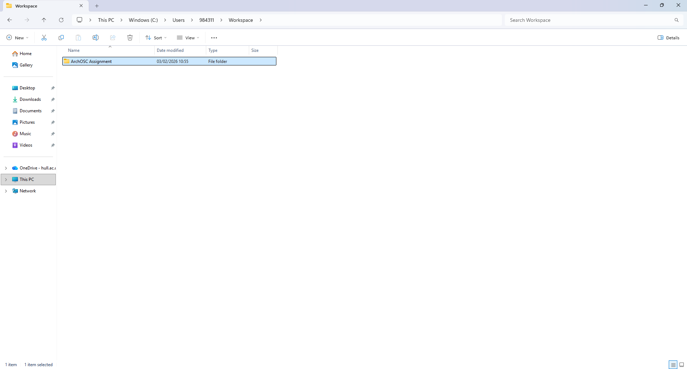
What I’ve done was, I created a new folder under the workspace folder where I named it: ArchOSC Assignment. Inside this said folder, I added 3 documents: A folder called "Pictures" where I would store all the screenshots that I will be taking during the lab, and a Word document called "Lab 2 Placeholder". Took a screenshot of both folders and saved it in "Pictures". (This process will be done at every task/step during the whole lab)
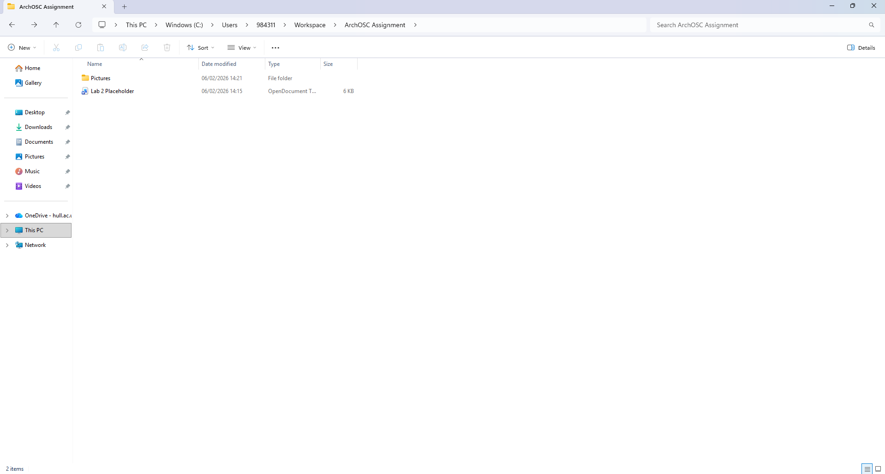
I opened the terminal and input the command “git init” to create a local repository. After I created the git within the folder, I repeated the process of taking a screenshot and saving it into the "Pictures" folder.
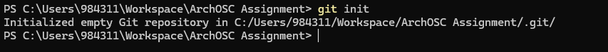
Went into GitHub and created an online repository. Pressed the “new” button that led me to a tab where I could choose certain settings to create my repository correctly. Set myself as the owner, added “README”, set the repository name to: ARCHOSC-Assignment-RicardoSebastiao, the visibility was put “private”, and on the section “add gitignore”, I selected: Visual Studio. After all that, I pressed enter and created my repository.
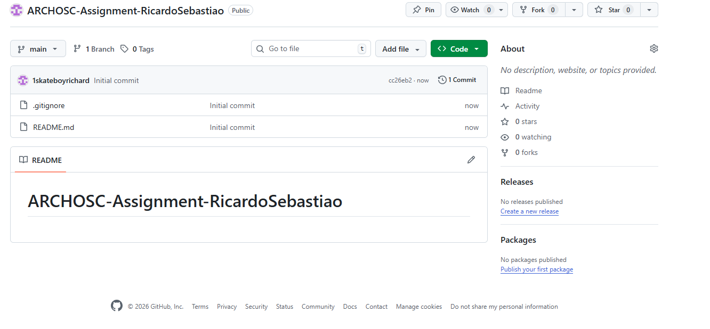
Opened the terminal in the folder by pressing the right mouse button and selecting the "terminal" option. With the terminal open, I used the command “git remote add origin [link of my repository on GitHub]” in order to create a link between the local repository and the online one. Then I used the command “git pull origin main” to get the information that GitHub generated when it created the repository.
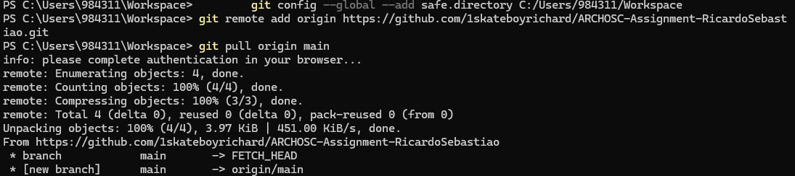
I opened Visual Studio Code and created a file by selecting “File” then “New Text File”. After the file had been created, I copied an HTML code that was given to me into the file and saved it in my local repository folder. Once saved, I double-clicked it, which opened the file in a web browser.
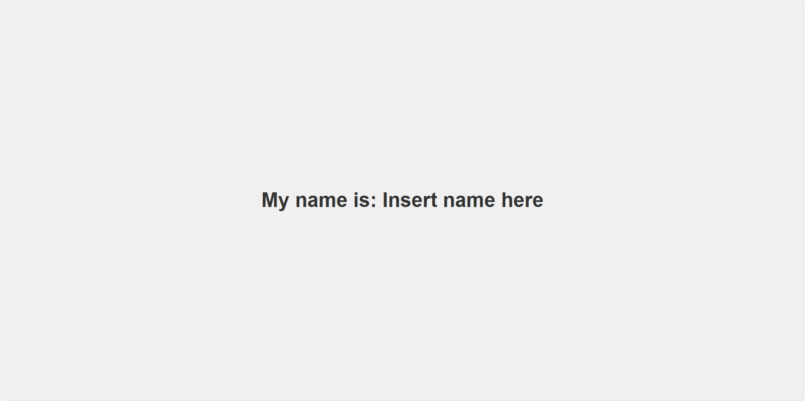
I had to update my local repository. In order to do this, I used the code “git status” to tell my local git repository to add the newly created files. This returned a list of files that git picked up within the repository. After that, I used the command “git add .” to make git track my files and add them to the repository. I then committed the files so that they are saved to the repository.
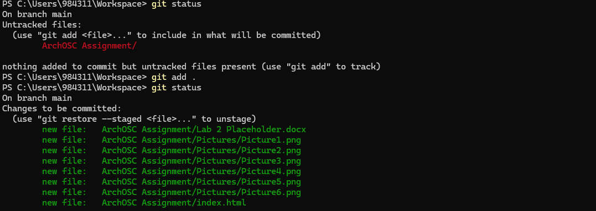
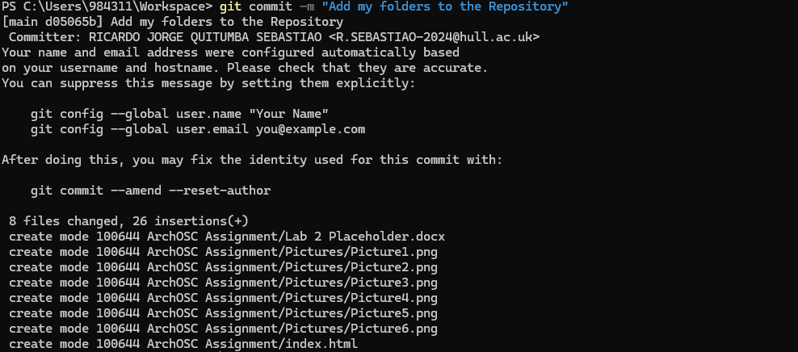
I had to push my changes to GitHub. I used the command “git push –u origin main”.
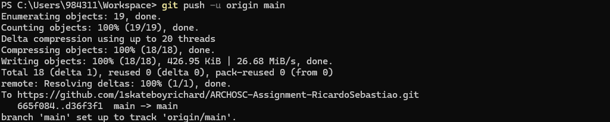
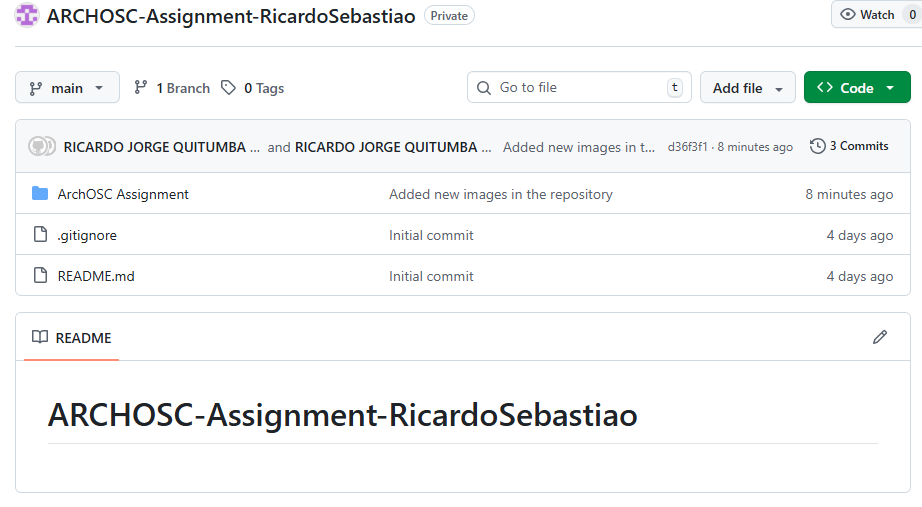
In order to host the website on GitHub Pages, I had to navigate back to my repository and choose "Settings" from the menu at the top. From the settings menu, I navigated to “Code and Automation” and then selected “Pages” from the list. In the GitHub Pages menu, I kept “Build and Deployment” as “Deploy from a branch”. Then, in the branch dropdown, I chose my main branch and pressed save. I then went back to the main page of the repository, searched for the “Deployments” section, and clicked the link that directed me to my site.
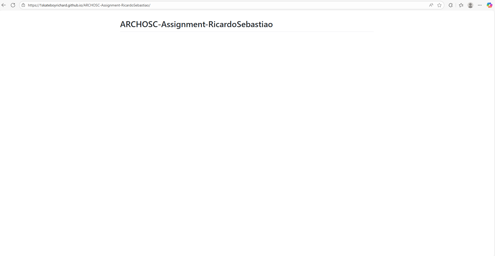